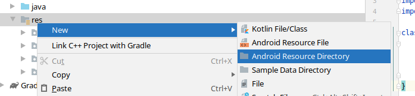
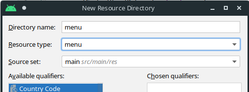
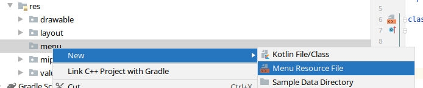
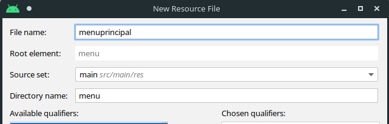
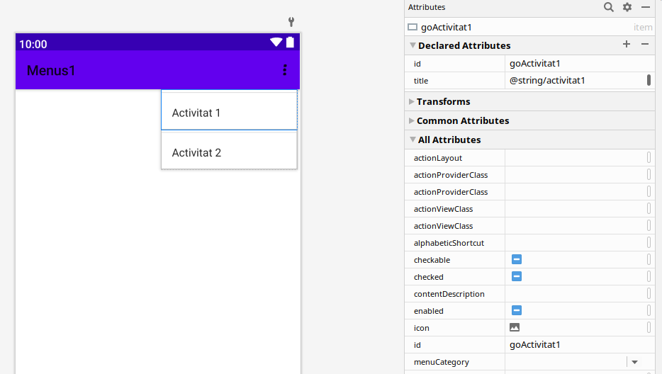
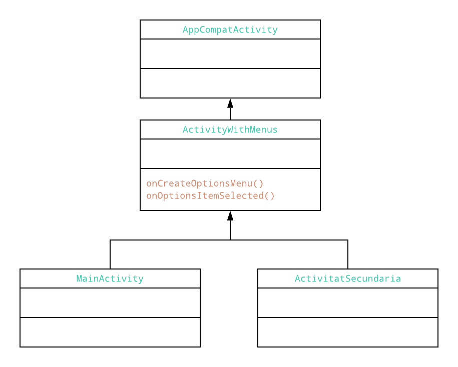

6. Menús en Android I
Menus
Els menús són un component comú en moltes aplicacions que ens permet escollir entre diverses funcionalitats d’aquestes. Per tal de donar una experiència d’usuari uniforme, es recomana utilitzar l’API de Menu.
A partir d’Android 3.0 (API 11) es proporciona una barra d’aplicació per tal de mostrar les accions més comunes de l’usuari.
En general, podem parlar de tres tipus de menús:
- Menú d’opcions des de la barra de l’App
- Menús contextuals
- Menús emergents
Per començar ens centrarem en el menú d’opcions de la barra de l’App.
1. Com definim un Menú?
Els menus es defineixen en format un format estantarditzat en XML, de forma independent a l’activitat o fragment, de manera que després s’injecta (inflate) a través d’un objecte de tipus menu.
Els recursos de menú s’ubiquen dins el directori res/menu, i contindran les següents etiquetes:
<menu>: És l’arrel del menú, i dins conté diversos elements de tipus<item>i<group>.<item>: Crea un MenuItem, que represetna un element en un menú, i que pot contindre algun element<menu>anidat per crear un submenú (només es permet un nivell d’anidament). Dins els items, tindrem propietat com l’identificador (android:id), la icona (android:icon) o el text (android:title), així com especificar quan i com l’element ha d’aparéixer o no a la barra d’app, mitjançant app:showAsAction. Aquesta propietat admet els següents valors:ifRoom: Afig l’element en la barra de l’aplicació si hi ha espai. Si no hi ha lloc per a tots els elements que tinguen aquesta propietat activada, es mostraran aquells que tinguen valors de l’atributorderInCategorymés baixos. La resta aniran al menú expandit.never: No es mostra mai l’element a la barra de l’App, sinò que ho fa al menú expandit. Aquest és el comportament per defecte.always: Afig sempre l’element a la barra de l’app. Aquesta no és una opció recomanable, ja que pot que diversos elements de la UI se superposen.collapseActionView: Indica so cal contraure la vista de l’acció associada a l’element d’acció.
<group>: Permet categoritzar diferents elements de menú per compartir propietats, com l’estat d’una activitat o visibilitat.
Creant un menú
Anem a veure com crear un menú per a una aplicació composta de dues activitats. El nostr menú servirà per passar d’una a altra activitat.
Per a això creem una nova activitat buida (Empty Activity) en un projecte nou (l’anomenarem Menus1).
Disposeu del projecte Menus1 ja implementat, per poder consultar-lo.

Com que aquesta activitat no té en principi cap recurs de menú associat l’haurem de crear (en altres tipus d’activitats com Blank Activity sí que apareix).
Per tal de crear el nostre menú, primer huarem de crear la carpeta de recursos de tipus menú. Localitzem la carpeta de res dels recursos, i amb el botó dret fem clic en ella i al menú desplegable seleccionem New > Android Resource Directory

I creem el nou directori menu de tipus menu:

I fem el mateix procediment per crear ara el recurs de tipus menú. Ens situem en la carpeta menu, fem clic amb el botó dret del ratolí i al menú desplegable seleccionem New > Menu Resource File.

I creem el nou menú, que anomenarem menuprincipal.

Si accedim al fitxer menuprincipal.xml veurem que el podem editar amb el dissenyador d’Android Studio. Serà convenient afegir-li un identificador i assignar-li un recurs de tipus String per al títol.

Fem el disseny del menú, i finalment, l’XML resultant és el següent:
<?xml version="1.0" encoding="utf-8"?>
<menu xmlns:app="http://schemas.android.com/apk/res-auto"
xmlns:android="http://schemas.android.com/apk/res/android">
<item
android:id="@+id/goActivitat1"
android:title="@string/activitat1" />
<item
android:id="@+id/goActivitat2"
android:title="@string/activitat2" />
</menu>
Per tal d’utilitzar un menú en una activitat, caldrà sobreescriure el mètode onCreateMenuOptions() i dins d’aquest fer ús del mètode MenuInflatter.inflate() per tal d’injectar el menú en l’activitat. Aquest mètode onCreateMenuOptions() s’invoca quan s’inicia l’activitat, per tal de posar el menú en la barra de l’aplicació. En versions anteriors a Android 3.0 el menú es creava quan es premia el botó de Menú.
Al nostre exemple, sobreescriuriem aquest mètode a la classe MainActivity:
override fun onCreateOptionsMenu(menu: Menu): Boolean {
val inflater: MenuInflater = menuInflater
inflater.inflate(R.menu.menuprincipal, menu)
return true
}
Per al seu correcte funcionament, se’ns haurà demanar importar:
import android.view.Menu
import android.view.MenuInflater
Amb açò ja podriem llançar l’aplicació i veure que apareix el nostre menú en la barra de l’Aplicació.
A més, també es poden afegir elements de menú amb add() i recuperar elements amb findItem().
2. Gestió dels clicks al menú
Quan se selecciona un element del menú d’opcions, el sistema invoca el mètode onOptionsItemSelected() de l’activitat, passant-li el MenuItem seleccionat. Podem identificar l’element invocant el mètode getItemId (o itemId per accedir a l’accessor en Kotlin), que ens mostrarà l’id de l’element de menú definit per android:id al recurs de menú.
De moment, anem a fer que quan es faça clic en cada element aparega un Toast indicant ques’ha seleccionat l’opció. Per a això sobreescrivim el mètode onOptionsItemSelected() a la classe MainActivity.
-> Açò és el que ens suggereix android studio
override fun onOptionsItemSelected(item: MenuItem): Boolean {
return super.onOptionsItemSelected(item)
}
Quan controlem correctament un element de menú, haurem de retornar true, mentre que si no el controlem tornarem false?. En cas que no controlem l’element del menú, invocarem al mètode onOptionsItemSelected de la superclasse.
override fun onOptionsItemSelected(item: MenuItem): Boolean {
return when (item.itemId) {
R.id.goActivitat1 -> {
Toast.makeText(this,"Has seleccionat Activitat 1", Toast.LENGTH_LONG).show()
true
}
R.id.goActivitat2 -> {
Toast.makeText(this,"Has seleccionat Activitat 2", Toast.LENGTH_LONG).show()
true
}
else -> super.onOptionsItemSelected(item)
}
}
3. Un menú comú a moltes activitats
El menú que hem implementat va lligat a la classe MainActivity. Si volguérem utilitzar el mateix menús en altres activitats, hauriem de copiar el mateix codi, i quan el modifiquem, modificar-lo en totes les activitats. La forma habitual de reutilitzar aquest codi sol ser generant un nou tipus de classe Activitat que només implemente els mètodes onCreateOptionsMenu() i onOptionsItemSelected(), i estendre esta classe per cada activitat que compartisca el mateix menú d’opcions. Així, tenim centralitzada la gestió del menú en una única classe. Si volem crear nous elements per a les activitats descendents, podem sobreescriure el mètode onCreateOptionsMenu(), invocar-lo amb super.onCreateOptionsMenu(menu) o bé afegir amb menu.add() les noves opcions.
A efectes pràctics, si normalment definim les nostres activitats com a extensions de la classe AppCompatActivity, ara introduïrem una nova classe que descendisca d'AppCompatActivity, que implemente els mètodes onCreateOptionsMenu() i onOptionsItemSelected(), i de la que descendiran les altres activitats.

Afegint el menú a diverses activitats
Anem ara a aplicar això a l’exemple que estàvem treballant. Per a això:
- Ccrearem una nova classe
ActivityWithMenusque implemente els mètodes per gestionar els menús. Aquesta la podem generar com a una classe normal, i l’huarem de definir com aopenper a que puga tindre classes descendents. - Farem que la nostra classe
MainActivitydesdencisca d’aquesta nova classe, i eliminarem els mètodes de gestió del menú en ella. - Crearem una nova activitat
Activitat2que tinga també el menú. Aquesta activitat la crearem com a New > Activity a partir també d’una Empty Activity, i crearem el layout activitat2.xml. Podem modificar els Layouts de cada activitat al nostre gust per tal de distingir una activitat d’altra.
A més d’estos ajustos, anem a modificar el funcionament del menú, de manera que cada entrada ens porte a cadascuna de les activitats, per al que haurem de crear els intents corresponents.
El codi de cadascuna de les classes serà el següent:
- Classe ActivityWithMenus
package com.ieschabas.pmdm.menus1
import android.content.Intent
import android.view.Menu
import android.view.MenuInflater
import android.view.MenuItem
import androidx.appcompat.app.AppCompatActivity
open class ActivityWithMenus : AppCompatActivity() {
override fun onCreateOptionsMenu(menu: Menu): Boolean {
val inflater: MenuInflater = menuInflater
inflater.inflate(R.menu.menuprincipal, menu)
return true
}
override fun onOptionsItemSelected(item: MenuItem): Boolean {
return when (item.itemId) {
R.id.goActivitat1 -> {
val intent = Intent(this, MainActivity::class.java)
startActivity(intent)
true
}
R.id.goActivitat2 -> {
val intent = Intent(this, Activitat2::class.java)
startActivity(intent)
true
}
else -> super.onOptionsItemSelected(item)
}
}
}
- Classe MainActivity
package com.ieschabas.pmdm.menus1
import android.os.Bundle
class MainActivity : ActivityWithMenus() {
override fun onCreate(savedInstanceState: Bundle?) {
super.onCreate(savedInstanceState)
setContentView(R.layout.activity_main)
}
}
- Classe Activitat2
package com.ieschabas.pmdm.menus1
import android.os.Bundle
class Activitat2 : ActivityWithMenus() {
override fun onCreate(savedInstanceState: Bundle?) {
super.onCreate(savedInstanceState)
setContentView(R.layout.activitat2)
}
}
Millorant el menú
Tal i com el tenim, el menú ens mostra en totes les activitats les mateixes opcions. Si estem en l’activitat principal (Activitat 1) i fem clic en aquesta opció en el menú, torna a carregar la mateixa activitat. Per a això, podem plantejar dos solucions:
-
Que no es canvie a l’activitat en què estem: Per a això, introduïrem al menú un nou atribut que ens indique l’activitat en la que s’està, i quan seleccionem una opció en el menú, que comprove que la nova activitat siga diferent a la que estem per tal de carregar-la.
En Java, definiriem aquest nou atribut com a un atribut
staticde la pròpia classe, però Kotlin no suporta aquest tipus d’atributs. En canvi, ens ofereix els objectes acompanyants ocompanion objecte, que aporten altres funcionalitats afegides. Al nostre cas, només hauriem de definir un objecte acompanyant amb aquest atribut estàtic.La classe del menú, en aquest cas, quedaria:
open class ActivityWithMenus : AppCompatActivity() { companion object { // Kotin no suporta objectes static, // però ofereix els objectes acompanyants. var activitatActual=0; // Per defecte, la 0 és la primeara } override fun onCreateOptionsMenu(menu: Menu): Boolean { val inflater: MenuInflater = menuInflater inflater.inflate(R.menu.menuprincipal, menu) return true } override fun onOptionsItemSelected(item: MenuItem): Boolean { return when (item.itemId) { R.id.goActivitat1 -> { if (activitatActual != 0) { val intent = Intent(this, MainActivity::class.java) activitatActual = 0; startActivity(intent) } true } R.id.goActivitat2 -> { if (activitatActual != 1) { val intent = Intent(this, Activitat2::class.java) activitatActual = 1; startActivity(intent) } true } else -> super.onOptionsItemSelected(item) } } } -
Ocultant directament l’opció de menú de l’activitat actual: Fem ús del mateix objecte acompanyant per determinar l’opció on estem, i en el mètode
onCreateOptionsMenu()recorrem les opcions del menú ocultant l’opció l’índex de la qual coincidisca amb l’activitat actual.
open class ActivityWithMenus : AppCompatActivity() {
companion object {
var activitatActual=0; // Per defecte, la 0 és la primeara
}
override fun onCreateOptionsMenu(menu: Menu): Boolean {
val inflater: MenuInflater = menuInflater
inflater.inflate(R.menu.menuprincipal, menu)
for (i in 0 until menu.size()) {
if (i == activitatActual) menu.getItem(i).isVisible = false
else menu.getItem(i).isVisible = true
}
return true
}
override fun onOptionsItemSelected(item: MenuItem): Boolean {
return when (item.itemId) {
R.id.goActivitat1 -> {
val intent = Intent(this, MainActivity::class.java)
activitatActual = 0
startActivity(intent)
true
}
R.id.goActivitat2 -> {
val intent = Intent(this, Activitat2::class.java)
activitatActual = 1
startActivity(intent)
true
}
else -> super.onOptionsItemSelected(item)
}
}
}
4. Gestionant l’estat
Quan canviem d’una activitat a altra o simplement amb un gir del dispositiu que faça que canvie l’orientació del Layout, l’activitat que estava en funcionament perd el seu estat, pel que ens hem d’assegurar de guardar i restaurar aquest estat per a que l’usuari trobe l’activitat com estava quan va canviar d’activitat.
Això s’aconsegueix amb els mètodes onSaveInstanceState(estat: Bundle) i onRestoreInstanceState(estat: Bundle), per a guardar i recuperar instàncies de l’estat respectivament.
Exemple
Anem a veure-ho amb un xicotet exemple modificant l’activitat principal, on inclourem un botó al layout que incremente i mostre el valor d’un comptador al TextView.
Per a això, l’XML de l’activitat principal quedaria:
<?xml version="1.0" encoding="utf-8"?>
<androidx.constraintlayout.widget.ConstraintLayout xmlns:android="http://schemas.android.com/apk/res/android"
xmlns:app="http://schemas.android.com/apk/res-auto"
xmlns:tools="http://schemas.android.com/tools"
android:layout_width="match_parent"
android:layout_height="match_parent"
android:background="#8BC34A"
tools:context=".MainActivity">
<TextView
android:id="@+id/mainActivityText"
android:layout_width="226dp"
android:layout_height="156dp"
android:text="@string/textActivity1"
android:textAlignment="center"
android:textColor="#FFFFFF"
android:textSize="36sp"
app:layout_constraintBottom_toBottomOf="parent"
app:layout_constraintLeft_toLeftOf="parent"
app:layout_constraintRight_toRightOf="parent"
app:layout_constraintTop_toTopOf="parent"
app:layout_constraintVertical_bias="0.264" />
<Button
android:id="@+id/IncrementaComptador"
android:layout_width="wrap_content"
android:layout_height="wrap_content"
android:text="@string/plus1"
android:textSize="36sp"
app:layout_constraintBottom_toBottomOf="parent"
app:layout_constraintEnd_toEndOf="parent"
app:layout_constraintStart_toStartOf="parent"
app:layout_constraintTop_toBottomOf="@+id/mainActivityText"
app:layout_constraintVertical_bias="0.197" />
</androidx.constraintlayout.widget.ConstraintLayout>
Fixeu-vos que l’identificador del botó és IncrementaComptador, per tant, afegirem el següent codi al mètode onCreate de la classe MainActivity:
IncrementaComptador.setOnClickListener{
comptador++;
mainActivityText.text=comptador.toString()
}
I prèviament haurem definit la variable mutable comptador com a atribut de la nostra classe:
class MainActivity : ActivityWithMenus() {
var comptador = 0
...
}
Amb açò, si llancem l’aplicació i fem diversos clicks, veurem que el comptador s’incrementa, però si canviem l’orientació del dispositiu pe a que es redibuixe en horitzontal, veurem que la pantalla mostra de nou l’estat inicial.
Per evitar això, com hem dit, anem a preservar l’estat amb els següents mètodes a la classe MainActivity:
override fun onSaveInstanceState(outState: Bundle) {
outState?.run{
putInt("comptador", comptador)
}
super.onSaveInstanceState(outState)
}
override fun onRestoreInstanceState(savedInstanceState: Bundle) {
comptador=savedInstanceState.getInt("comptador")
mainActivityText.text=comptador.toString();
super.onRestoreInstanceState(savedInstanceState)
}
Veiem alguns detalls del codi:
- El primer mètode,
onSaveInstanceState, rep un objecteoutStatede tipus Bundle, sobre el que podrem bolcar la informació per preservar.- Aquest objecte de tipus Bundle permet afegir i recuperar parells de clau-valor.
- Per afegir un parell clau-valor, disposem de diversos mètodes en funció del tipus de dada a emmagatzemar:
putInt,putStrint, etc. Al nostre cas, hem afegit el valor del comptador com un enter ambputInt("comptador", comptador).
La funció d’extensió
runLa funció d’extensió
runés una de les funciona d’àmbit, com són tambéalso,let,apply,runowith.La funció
runés una funció literal amb un receptor, on l’objecte que es tracta no es passa com a un paràmetre a la funció, sinò que la funció s’aplica com si fos membre de l’objecte (par això s’anomena receptor). Aquesta funció resol lambdes que no retornen cap valor però que tenen un efecte col·lateral.Aleshores, amb la construcció:
outState?.run{ putInt("comptador", comptador) }Comprovem que l’objecte
outStateno és nul, i si no ho és, executem el seu mètode putInt.
- El segon mètode,
onRestoreInstanceState(savedInstanceState, rep també un objecte de tipus Bundle, amb el que restaurarem els diferents valors de la classe. Per a això:- Recuperem el valor del comptador amb el mètode
getInti l’assinem al comptador:comptador=savedInstanceState.getInt("comptador"). - Restaurem el valor al textView de la interfície:
mainActivityText.text=comptador.toString(); - I in
- Recuperem el valor del comptador amb el mètode
- I fixeu-vos que en ambdós casos, hem invocat als mètodes corresponents de la classe pare amb
super.onSaveInstanceState(outState)ionRestoreInstanceState(savedInstanceState: Bundle).
Amb tot açò, si ara voltegem la pantalla per a que es redibuixe la interfície, veurem que ja no perdem el valor d’aquesta.
Però… què passa si passem a l’activitat 2 i després tornem a l’activitat 1?
Gestionant l’estat entre intents
Des de la nostra classe Menú, el que fem és llançar mitjançant intents una o altra activitat amb el mètode startActivity. Açò fa que cada vegada s’instancie la classe corresponent, de manera que perdem de nou els valors.
Per tal d’evitar això, els valors que volguem mantenir entre canvis d’activitat hauran de ser valors propis de la classe. En Java tenim els atributs static per tal d’abordar aquesta problemàtica. Al nostre cas, com ja hem utilitzat a la classe ActivityWithMenus per saber l’activitat actual, farem ús d'objectes acompanyants. si definim el nostre atribut comptador (o en general tot l’estat que volguem emmagatzemar) com a un companion object, tindrem resolt el problema.
Resultat final
Amb tot açò, la nostra classe MainActivity quedarà de la següent forma, afegint el comptador com a un objecte acompanyant:
package com.ieschabas.pmdm.menus1
import android.os.Bundle
import android.os.PersistableBundle
import android.widget.Toast
import kotlinx.android.synthetic.main.activity_main.*
class MainActivity : ActivityWithMenus() {
companion object {
var comptador = 0
}
val tag="MainActivity Events"
override fun onSaveInstanceState(outState: Bundle) {
outState?.run{
putInt("comptador", comptador)
}
super.onSaveInstanceState(outState)
}
override fun onRestoreInstanceState(savedInstanceState: Bundle) {
comptador=savedInstanceState.getInt("comptador")
mainActivityText.text=comptador.toString();
super.onRestoreInstanceState(savedInstanceState)
}
override fun onCreate(savedInstanceState: Bundle?) {
super.onCreate(savedInstanceState)
setContentView(R.layout.activity_main)
mainActivityText.text=comptador.toString()
IncrementaComptador.setOnClickListener{
comptador++;
mainActivityText.text=comptador.toString()
}
}
}
5. Menús Contextuals
els menús contextuals proporcionen accions associades a elements o marcs concrets de la interfície d’usuari, generalment elements de tipus col·leccion de vistes, com els ListViews o GridViews.
Hi ha dues formes de proporcionar accions contextuals, per una banda, en un menú flotant, com a una llista d’elements de menú que apareix en fer un clic llarg sobre un element, o é en el mode d’acció contextual, que mostra una barra d’accions contextuals en la part superior de la pantalla amb elements d’acció.
De moment ens centrarem en el primer d’ells.
5.1. Creació d’un menú contextual flotant
El primer que caldrà fer és regitrar a l’activitat la vista amb la que s’associarà el menú contextual, invocant el mètode registerForContextMenu() i passar-li’l a la vista. En cas que l’activitat utilitze una ListView o GridView i volem que cada element oferisca el mateix menu contextual, caldrà registrar els elements del menú contextual passant ListView o GridView a registerForContextMenu().
En moment la vista registrada reba un esdeveniment de clic llarg, el sistema invocarà el mètode onCreateContextMenu(), i és aci on definirem els elements del menú, generalment, afegint un recurs de menú.
Per veure un senzill exemple, anem a associar un menú contextual al text de l’activitat 2. Per a això, abans que res, dins el mètode onCreate de l’activitat registrarem el menú contextual passant-li la vista sobre la que actuarà, en aquest cas, el text de l’activitat textActivitat2:
/* Classe Activitat2 en Activitat2.kt */
override fun onCreate(savedInstanceState: Bundle?) {
...
registerForContextMenu(textActivitat2)
}
I sobreescriurem el mètode onCreateContextMenu de la següent forma:
/* Classe Activitat2 en Activitat2.kt */
override fun onCreateContextMenu(
menu: ContextMenu?,
v: View?,
menuInfo: ContextMenu.ContextMenuInfo?) {
// "Unflem" el menú amb el recurs de menú principal
menuInflater.inflate(R.menu.menuprincipal,menu)
// També podem afegir-li una capçalera
menu?.setHeaderTitle("Menú contextual")
super.onCreateContextMenu(menu, v, menuInfo)
}
Aquest mètode funciona de forma semblant al mètode onCreateMenuOptions(), amb la diferència que en lloc d’invocar-se només una vegada en iniciar-se l’aplicació, ho fa cada vegada que es necessita el menú contextual. Amb MenuInflater omplim el recurs contextual des d’un recurs de menú -al nostre cas, hem utilitzat el mateix de les activitats-. Als paràmetres del callback incloguem la vista sobre la que s’ha invocat el menú, i l’objecte ContextMenu.ContextMenuInfo que proporciona informació addicional sobre l’element seleccionat. Si l’activitat té diverses vistes amb diferents menús contextuals en cadascuna, podem utilitzar estos paràmetres per determinar el menú contextual a unflar.
Ara ens queda determinar les accions que farem en cada opció. Fixeu-vos que el recurs de menú no porta associades les accions, de maner que podem utilitzar el mateix menú per a la barra de l’aplicació i com a menú contextual, i en cadascun que ralitze unes accions diferents.
En aquest exemple, únicament farem que es mostre un Toast en cada selecció del menú. Per a això, hem d’implementar el mètode onContextItemSelected().
/* Classe Activitat2 en Activitat2.kt */
override fun onContextItemSelected(item: MenuItem): Boolean {
when(item.itemId){
R.id.goActivitat1 ->
Toast.makeText(this, "Click on Activitat 1", Toast.LENGTH_SHORT).show()
R.id.goActivitat2 ->
Toast.makeText(this, "Click on Activitat 2", Toast.LENGTH_SHORT).show()
}
return super.onContextItemSelected(item)
}
En aquest mètode rebem l’ítem seleccionat en el menú, i amb el mètode getItemId() podem consultar el seu ID al menú XML, comparar-lo amb els IDs que desitgem controlar i realitzar les accions pertinents. Al nostre cas, mostrar un simple Toast.
Finalment, també podem controlar quan es tanca aquest menú contextual, implementant el mètode OnCOntextMenuClosed. Per exemple, per mostar un toast quan tanquem aquest menú:
/* Classe Activitat2 en Activitat2.kt */
override fun onContextMenuClosed(menu: Menu) {
Toast.makeText(
this,
"S'ha tancat el menu",
Toast.LENGTH_SHORT
).show()
super.onContextMenuClosed(menu)
}
Documentació oficial